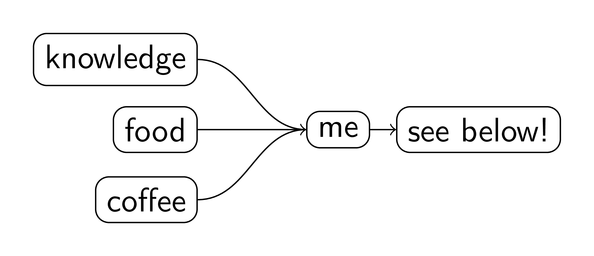

portfolio

I love learning new things, and I particularly enjoy the challenge of wondering "Could I do that?" This is a portal into various areas where I've had that thought, persevered sufficiently to get a result, and I was pleased enough with it to show the internet.
Take a look around; if you want to get back here, click portfolio in the top menu.